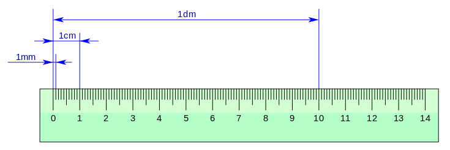

El milímetro es una unidad de longitud que equivale exactamente a una milésima parte de un metro. Dicho de otra forma, 1 metro es exactamente igual a 1000 milímetros.
Esto indica que el milímetro es un submúltiplo del metro, la unidad de longitud del Sistema Internacional de Unidades. En consecuencia, puede relacionarse fácilmente con el resto de múltiplos y submúltiplos del metro usados habitualmente.
El milímetro se utiliza para medir objetos o distancias relativamente pequeñas. Es una unidad de gran importancia en todo tipo de disciplinas científicas y matemáticas.
